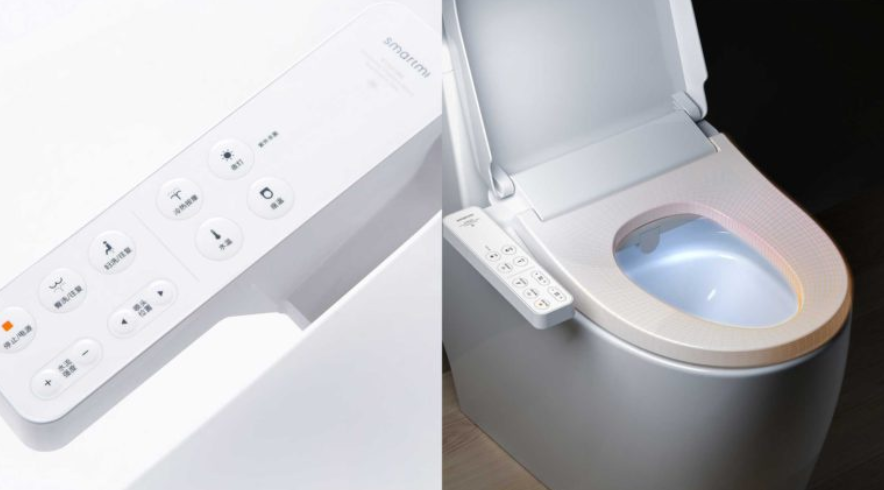
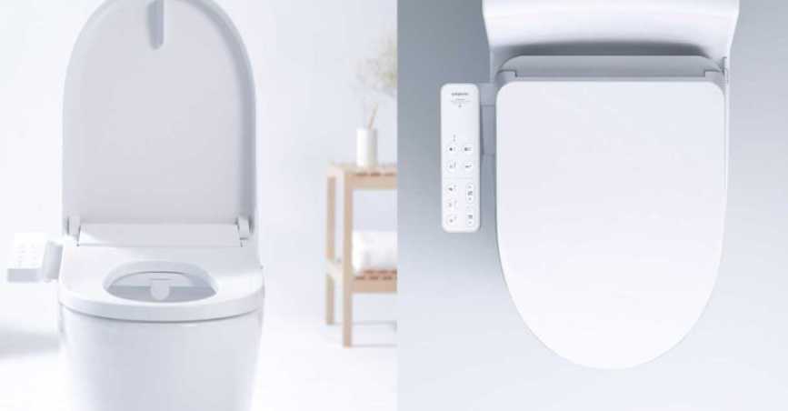
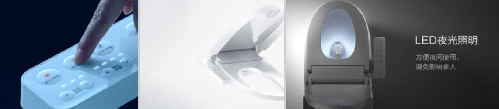

Xiaomi convierte tu váter en uno japonés con chorros por 128 euros
Xiaomi nos tiene acostumbrados a todo tipo de gadgets y accesorios, que van desde móviles, tablets, portátiles, smartwatches o cámaras, hasta cosas para el hogar como platos, vasos, toallas, maletas o edredones. El último “gadget” de la compañía es una interesante adición de tecnología a un aparato de uso diario: el váter o WC.Xiaomi Zhimi Smartmi lanza una tapa de váter electrónica con chorros
Aunque en Europa lo más extendido sea tener un váter y un bidet, en otros países como Japón (o incluso en Europa en algunos hoteles de cuatro o más estrellas) encontramos un sistema muy cómodo y práctico que permite también ahorrar mucho papel. Estos váteres cuentan con un par de chorros de agua regulables en presión y temperatura. En el siguiente vídeo podéis ver más en detalle cómo funcionan (el vídeo tiene subtítulos en español).
Ahora, Xiaomi te pone más fácil añadirle una de estas tapas a tu váter con el nuevo producto de Xiaomi Zhimi Smartmi. Mientras que hay algunas soluciones en España con un precio similar, la de Xiaomi tiene un acabado más cuidado y más funcionalidades. Además, el diseño está basado en los váteres japoneses, con los mismos iconos. Estos iconos ayudan a identificar para qué sirve cada cosa, ya que las letras del gadget de Xiaomi vienen en chino. 
ntre los modos con los que cuenta el váter con chorros de Xiaomi encontramos un sistema que calienta el agua con la temperatura que queramos, además de calentar la taza. Cuenta también con un sistema de masaje con movimiento y regulación de presión. Los chorros son regulables también en presión y temperatura, y cuenta con dos: uno para el tercer ojo y el otro para la higiene femenina (con modo de lavado suave incluido).
Por 128 euros puedes cambiar tu experiencia de ir al baño
Para que el agua sea limpia, el sistema del gadget de Xiaomi cuenta con filtros de 20 micras para sedimentos e impurezas. Además, cuenta con un sistema de autolimpieza y esterilización con rayos UV, eliminando el 99,9% de las bacterias. Para evitar impurezas en los chorros, antes echa automáticamente agua por encima para limpiar la suciedad que hayan podido depositarse
Y si lo vas a utilizar de noche, la tapa cuenta también con un sistema de iluminación LED para evitar que tengas que encender otras luces en el hogar. La botonera, situada en la parte derecha del inodoro cuando estás sentado, cuenta con protección IPX4, por lo que es resistente a chorros de agua durante al menos 5 minutos. Para evitar golpes, la tapa tiene bajada ralentizada.
La tapa con chorros de Xiaomi cuesta 999 RMB, equivalente a 128 euros. El precio de instalación en China es de 11,5 euros, aunque obviamente sólo válido para el país. Si lo compráis para ponerlo en España, tendréis que instalarlo vosotros mismos o llamar a un fontanero.
El proceso se realiza fácilmente con colector de dos o más salidas: una para la cisterna y otra para el sistema de la tapa con chorros. Además, hay que tener un enchufe de corriente cercano. El gadget está a la venta desde ayer, y no debería tardar en aparecer en resellers.